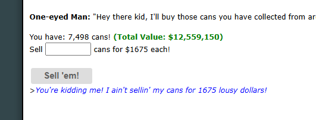

What does it do?
When you visit the Can Depo, it's often difficult to tell exactly how much money your current inventory of empty cans is worth. The Can Depo Helper automatically calculates the total monetary value of all the cans you're carrying and displays it right next to your current balance.
Visual Example
Here is what the injected "Total Value" looks like at the Can Depo:

How to use it
There is nothing to configure! The Can Depo Helper runs automatically as soon as you open the Can Depo.